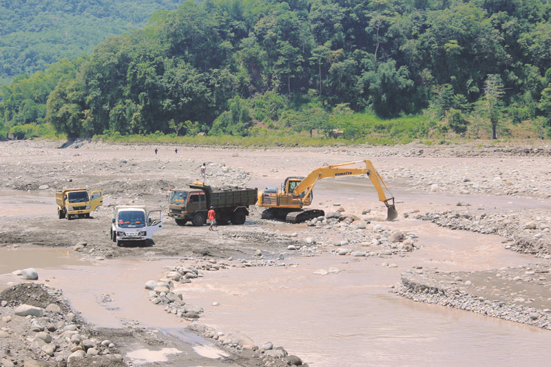

Makassar Climate Change Vulnerability Assessment
Makassar, South Sulawesi, Indonesia
Key organizations & partners:
Kota Kita; UN Habitat; United Nations Development Programme (UNDP), United Nations Environment Programme (UNEP); Makassar Development Planning Agency (BAPPEDA Makassar)
Duration:
2013

A booming city faces climate change challenges as it reclaims land along its coast
As the “Gateway to Eastern Indonesia,” Makassar’s economy is booming as the country’s east develops and demands more commodities. Despite this economic success, the rapid urbanization of the city’s periphery and the changing landscape of the coast through land reclamation projects threaten to damage its natural ecosystems and stress its water supply system. To examine the effects on the city’s long-term environmental sustainability, Kota Kita and three United Nations agencies, along with the city government of Makassar, teamed up to identify the city’s most vulnerable people, communities, and eco- and urban systems.
Makassar is growing rapidly and development there is profoundly affecting the city in both positive and negative ways. New commercial and residential developments along the coastal wetlands, combined with plans to increase the city’s size by 20 percent — by taking land from the periphery and dumping it in the sea to create landfill — promise a boost to the city’s economy. But this simultaneously threatens Makassar’s many traditional fishing communities by blocking their access to the ocean or evicting them entirely, and causes ecological harm that results in fewer fish stocks farther from shore.
Despite this tension, the new development and the city’s long-established fishing industry — integral to Makassarese identity — both rely on the shoreline, itself vulnerable to a sea-level rise that could cause coastal abrasion. Alteration of the coast and its wetlands through the twin drivers of climate change and urban development disrupts the interrelation between rich ecological systems, hampering the wetlands’ important role in water purification, flood control and shoreline stability. This makes the city and its residents more vulnerable to further climate change effects, as weather patterns become more intense and seasonal changes harder to predict.
Our team gathered information from available government, geospatial and satellite data, observation field trips, and community meetings and focus group discussions with civil society organizations, community members and government officials. The resulting analysis identified the city’s most vulnerable areas and people, and then prioritized these ‘hotspots’ of vulnerability.
Our vulnerability assessment aimed to bring together an understanding of urban growth dynamics with that of climate trends and their impacts. The vulnerability assessment involved measuring and mapping by neighborhood the susceptibility to climate change impacts, assessing the capacity of a range of governmental, civil society and community bodies dealing with climate hazards, and an assessment of ecosystem-based adaptation, focusing on watersheds and wetlands, which play an essential role in minimizing sensitivity to climate change impacts for poor and vulnerable communities.
We found that the urban poor living along the coast and along rivers are among the city’s most vulnerable, as they live in areas most affected by current and future climate change hazards. Climate change threatens their livelihoods and physical safety, and this compounds their existing social vulnerabilities of low income and lack of access to water.
Finally, given the lack of fine-grain local data, through observation, interviews and data analysis, we carried out a neighborhood analysis of three representative typologies of neighborhoods and show how vulnerability affects some communities more than others in the city.
In June 2013 we organized a city-wide workshop involving civil society organizations and government officials from relevant sectors to present the assessment findings and discuss our set of recommendations with participants. The recommendations in this report are informed by the conclusions of this workshop.

